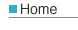
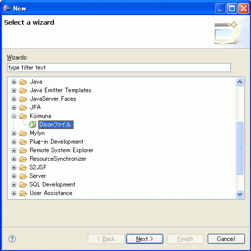
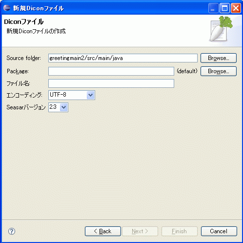

|
 |
|||||
|  | ||||||
概要Kijimuna是用于支援Seasar开发的一种Eclipse插件。使用Kijimuna可以很方便地对Dicon文件进行编辑和验证，提高开发效率。Kijimuna提供以下的功能。
NEWS安装指南Kijimuna的动作环境为Eclipse3.2/3.3。请从下面的更新站点选择「Kijimuna」进行安装。 对应于Eclipse3.1版的开发已经停止，不过可以从下面的更新站点安装旧版本。 对应于Eclipse3.0版的开发已经停止，不过可以从下面的更新站点安装旧版本。 下载不利用更新站点的场合，可以从下面的网址下载。 snapshot（开发版）snapshot可以从下面的更新站点进行安装。 现在以下的snapshot可以利用。
（注）Kijimuna 1.1.5之后的版本号的格式为：major，minor，release，yyyymmdd-顺序号。 而且，发布(release)的版本号若为单数，表示是开发版(snapshot)，若为偶数则是正式发布版(release)。 因此，这次1.1.6为缺号，下次的正式发布版(release)的版本号为1.1.8。 用法以下是项目(project)的配置方法。
在项目的配置画面选择「OK」关闭该画面后，会自动对Dicon文件进行分析和校验。如果没有自动执行的话，请对项目（project）执行清除(clean)处理。 初次作成dicon文件的场合，可以使用wizard来作成该文件。  邮件组列表
追踪(tracking)
|
||
| © Copyright The Seasar Foundation and the others 2004-2006, all rights reserved. |